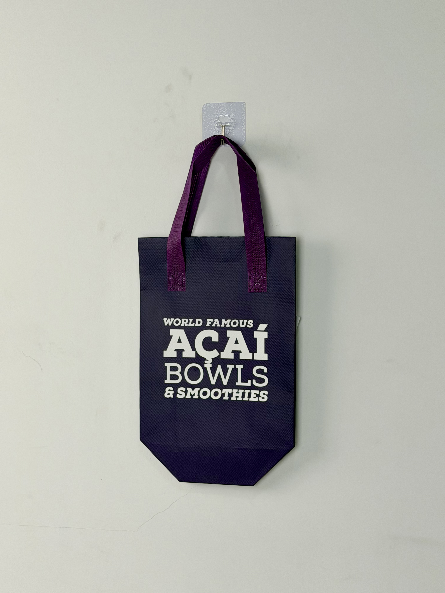

A deep-navy non-woven thermal tote designed for OAKBERRY, featuring bold white typography and a geometric octagonal base engineered for stable bowl transport in the food-delivery ecosystem.

OAKBERRY is a Brazil-born fast-casual health-food franchise specializing in açaí bowls, smoothies, and superfood-based menu items. Founded in 2016, the brand has expanded to over 700 locations across 40 countries, positioning itself as the global standard for premium açaí consumption outside the Amazon region. Its visual identity draws heavily from Brazilian beach culture — vibrant, energetic, and unapologetically bold.
The bag needs to survive a 30-minute scooter ride through São Paulo traffic without tipping a topped açaí bowl. Form follows function, but the brand voice must still shout.
Unlike retail shopping bags, this project demanded a delivery-first engineering approach. The primary use case was third-party food delivery (Uber Eats, iFood, Rappi) and in-house courier services where bags are stacked in insulated backpacks or carried on motorcycle racks. Stability, thermal retention, and brand visibility at the customer's door became the three non-negotiable design pillars.
The design language rejects the organic, leafy aesthetic common in health-food packaging in favor of a streetwear-inspired typographic treatment. The message is immediate and unmissable: this is the world's most famous açaí, delivered to your door. No illustrations, no gradients, just confident letterforms on a dark canvas that hides the inevitable scuffs of daily courier use.
White boldface sans-serif against deep navy ensures legibility from 10 meters — critical for courier handoff moments.
Eight-sided flat bottom provides superior standing stability compared to standard gusset bags, preventing bowl tipping.
Navy body conceals stains and wear marks from daily food-service use, extending professional appearance over time.
Reinforced box-X pattern distributes dynamic load from courier movement across four stress points.
Every specification was calibrated for the thermal and mechanical stresses of Latin American food-delivery infrastructure. The 4mm insulation layer maintains açaí's frozen consistency for up to 45 minutes in ambient temperatures exceeding 35°C, while the octagonal base geometry prevents the catastrophic tipping that destroys topped bowls during transport.
| Parameter | Specification | Test Standard |
|---|---|---|
| Thermal Retention | 45 min at -5°C delta (35°C ambient) | Internal Protocol |
| Load Capacity | 8 kg | ASTM D5265 |
| Base Stability Angle | > 25° tip threshold | Internal Protocol |
| Print Abrasion | > 500 cycles | ASTM D5264 |
Food-service packaging demands hygiene-certified production lines and batch traceability. This order was manufactured under HACCP-aligned protocols with dedicated cutting tables and needle-detection checkpoints to eliminate foreign-object risk.
Rolls inspected for contamination and odor. UV-C surface treatment prior to cutting eliminates microbial load on raw material.
Manual flatbed screen printing with opaque white plastisol. Flash-cured between passes to prevent bleed-through on navy substrate.
Three-layer sandwich (non-woven / EPE foam / aluminum-PE) heat-bonded in continuous roll lamination with 3kg/cm pressure.
CAD-nested die pattern maximizes material yield. Octagonal bottom panel cut separately and pre-scored for precise fold angles.
Double-needle stitching at 9 SPI. Handles attached with box-X reinforcement rated for 150N pull force per attachment point.
100% passage through calibrated needle detector. Random sample thermal testing validates 45-minute retention specification.
The tote was rolled out across OAKBERRY's Brazilian flagship network and subsequently adopted by franchisees in Portugal, Spain, and the UAE. Its deployment coincided with a strategic shift toward owned-delivery channels to reduce dependence on third-party platform commissions.
Key Insight: The octagonal base proved to be the most impactful design feature. Courier feedback indicated that bags could be placed on motorcycle fuel tanks or delivery box corners without the rocking instability that caused bowl damage in conventional rectangular-base bags.
Brand visibility extended beyond the delivery transaction itself. The bold white typography photographs clearly in customer unboxing content shared to Instagram Stories and TikTok, generating organic impressions in markets where OAKBERRY had not yet opened physical locations — effectively turning delivery packaging into a low-cost brand awareness tool.
Three structural decisions differentiate this delivery tote from generic food-service bags. Each was informed by direct observation of courier behavior and tropical-climate operational constraints.
The eight-sided bottom increases the polygon's inscribed circle diameter, creating a wider effective base without increasing material usage. This geometry resists tipping on uneven surfaces — a critical advantage when bags rest on motorcycle seats, curbs, or apartment intercom ledges.
Using one opaque white screen instead of multi-color gravure reduced unit cost by 34% while delivering superior coverage on the dark substrate. This cost efficiency enabled franchise-wide deployment without compromising the bold visual statement.
Standard 2-3mm insulation fails in Brazilian summer conditions where ambient temperatures regularly exceed 35°C with 80% humidity. The 4mm EPE foam layer extends frozen retention by 18 minutes — the difference between a perfect açaí bowl and a melted smoothie at the customer's door.
We engineer insulated food-service packaging for tropical climates, delivery logistics, and franchise-scale rollouts. From base geometry to foam density, every parameter is optimized for your menu.